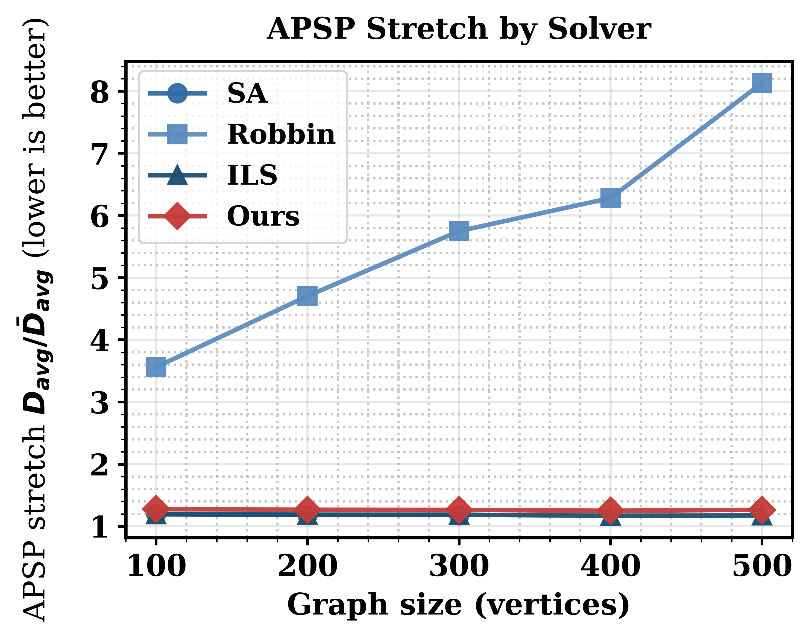

서론
졸업과제가 마무리 되어간다.
한 것들을 정리하자.
메타데이터
- 기간: 2026-02 ~ 2026-09
- 참여인원: 본인 이외 네 명
- 깃헙 주소: https://github.com/quantum-guardians
본론
연구 목적
- 무방향 그래프의 방향화를 통해 강연결을 유지하면서 모든 정점 간의 거리를 최소로 하는 해를 찾고자 함
- 이를 통해 혼잡한 상황(ex. 공연 후 퇴장, 축제 기간)에서 안전한 보행을 도모하고자 함
- QA를 이용해 변화하는 도로 상황을 반영하여 빠르게 계산하여 실질적인 이득을 보고자 함
기존 연구
- 어떤 그래프에서 강연결이 존재하는 지는 Robbins 정리에 있음
- 1939년 증명
- 그래프가 연결되어 있고, 다리가 없을 시 존재
- dfs로 구하기 가능
- 해당 문제는 NP-hard 임이 밝혀져 있음
- ref: Burkard, R.E., Feldbacher, K., Klinz, B., Woeginger, G.J. (1999). Minimum-cost strong network orientation problems: Classification, complexity, and algorithms. _Networks_, 33(1), 57–70.
- Strong Network Orientation Problem(SNOP)이란 이름으로 간헐적으로 연구 진행 중
- Duhamel and Santos (2022)
- 수리 모형 정식화와 메타휴리스틱 함께 $제시
- 도로에 대해서는 연구가 많다
- 간선을 특정 비율로 나누어서 생각하는 방식
- 도로 통제 상황에서 도로망 방향 재설정
- 격자형 도시 도로망의 일방통행 최적화
- https://github.com/quantum-guardians/mr2s-module/issues/95
정리
- 목적 함수 - 모든 정점 거리합의 최소
- 계산 방식 - qubo를 통한 qa 사용(이후 qubo 설명)
- 목표 - 고전적인 방식과 비교하여 짧은 시간과 합리적인 해 산출
문제점
- 모든 식을 qa 하드웨어에 올릴 수 없음
- 양자 하드웨어는 이진 변수로 이루어진 이차항만 올릴 수 있음
- qubo(quadratic unconstrained binary operation) 아래와 같은 형태를 가짐
- \(f(x)=\sum_{i=1}^{N}\sum_{j=1}^{N} Q_{i,j}\,x_i x_j+\sum_{i=1}^{N} c_i x_i+d\)
- 이와 같은 형태가 아니면 qa(quantum annealing)를 사용하지 못함
- brute force 방식
- 강연결인 해 하나 구하기
- distance 합 구하기 (APSP)
- 이를 반복하여 제일 좋은 해 찾기
- 시간복잡도 - \(O\!\left(2^{|E|} \cdot |V|\,|E|\,\log|V|\right)\)
- \(V\): 정점 집합, \(|V|\): 정점 개수
- \(E\): 간선 집합, \(|E|\): 간선 개수
- 지수 시간이 걸리므로 큰 그래프에서 사실상 불가능
- MILP 정식화 존재
- 목적함수 = All Pairs Shortest Path(APSP) 합
- Gurobi 등의 솔버로 해결 가능
- 하지만, 여전히 지수시간 + qa에 못올리는 형식
- 치환 가능하나 변수가 폭증
- APSP를 목적 함수로 사용 불가능
- 최단 거리는 출발점부터 도착점까지 가는 모든 경로의 변수를 한꺼번에 생각해야함
- 이를 다항식으로 표현하면 차수가 간선 수 규모까지 상승
- 보조 변수로 차수 낮추기는 가능하지만 MILP와 동일하게 변수 폭증
- 양자 하드웨어는 이진 변수로 이루어진 이차항만 올릴 수 있음
- 바뀌는 도로 상황에 맞추어 빠르게 계산이 가능해야 함.
- 한 간선에 대해 가중치가 변하면 고전적인 방식에선 전부 다시 계산 해야 함
핵심 아이디어
- n-hop 대리지표
- APSP 합은 고차 다항식이므로, 이 자체를 qa의 목적함수로 사용할 수 없어서 이를 대리하는 목적함수가 필요
- hop은 한 점 \(u\)에서 다른 점 \(v\)로 가는 데 거치는 간선을 표현
- \(u \rightarrow v\)가 간선 2개를 거치면 2-hop
- 다음과 같은 실험 결과로 대리 할 수 있음을 실험적으로 확인
- 무작위 들뢰네 평면 그래프 (V = 50, E = 137) 생성
- 이 중 강연결을 이루는 경우를 500개 선정
- APSP 합(x축)이 낮아질 수록 n-hop의 도달 쌍 수(y축)가 많아지고 있음
- 목적함수인 APSP 합과 n-hop이 음의 상관관계를 가지므로 대리함수로 적격
- 결론 - apsp 합 최소화 -> n-hop 수 최대화로 치환
- 아래는 해당 결과

- n-hop qubo 표현
- 2-hop과 3-hop을 함수로 사용
- 4-hop 이상부터는 표현은 가능하지만, 이차로 낮추기 위한 치환 작업에서 변수가 급증해서 효율이 떨어짐
- 목적함수는 아래와 같이 표현 및 qubo 화
- \(H_{\mathrm{dist}}= -\sum_{e_{ik},\, e_{kj}} I_{i \to k}\, I_{k \to j}\;-\; \sum_{e_{ij},\, e_{jk},\, e_{kl}} I_{i \to j}\, I_{j \to k}\, I_{k \to l}\)
- 가중치 버전
- \(H_{\mathrm{dist}} = -\sum_{e_{ik},\, e_{kj}} w_{ik}\, w_{kj}\, I_{i \to k}\, I_{k \to j} \;-\; \sum_{e_{ij},\, e_{jk},\, e_{kl}} w_{ij}\, w_{jk}\, w_{kl}\, I_{i \to j}\, I_{j \to k}\, I_{k \to l}\)
- 가중치는 높을 수록 좋다고 가정
- 3-hop이 과대평가 될 가능성 존재
- 0/1 변수는 indicator 함수를 사용하여 각 정점의 번호 기준으로 0과 1로 표현
- \(I_{i \to j} =\begin{cases}1 - x_{ij}, & i < j \\x_{ji}, & i > j\end{cases}\)
- 가중치 버전
- 3-hop으로 인한 식은 구조적으로 삭제
- \((1-x_1)(1-x_2)(1-x_3) + x_1 x_2 x_3= 1 - x_1 - x_2 - x_3 + x_1 x_2 + x_1 x_3 + x_2 x_3\)
- 2차식 qubo 표현 완료
- 2-hop과 3-hop을 함수로 사용
- 대리함수 최적화 이후 APSP 합 표현식
- \(\mathrm{stretch} = \frac{1}{|P|} \sum_{(s,t) \in P} \frac{d_{G'}(s,t)}{d_{G}(s,t)} \;\in\; [1,\infty)\)
- 시그마 안 분모는 무방향일 때 그래프의 APSP 합
- 결과에서 강연결 실패 시 무한대로 발산
- 최종 형태
- \(H(x) = c + \sum_{a} h_a\, x_a + \sum_{a<b} J_{ab}\, x_a x_b\)
파이프라인
flowchart LR
A["그래프 전처리"] --> B["QUBO화"] --> C["QA 진행"] --> D["결과 확인"]
그래프 전처리
- 큰 그래프는 한 번에 qa 하드웨어에 넣을 수 없음
- 테스트 결과
- 2-hop만 사용하면 테스트 그래프에서 정점 개수 400까지 커버
- 2+3-hop 사용 시 테스트 그래프에서 정점 개수 175까지 커버
- https://github.com/quantum-guardians/mr2s-module/issues/93
- 또한, 한 번에 다 올라가도 체인 길이가 길어지면 중간에 깨져 해 품질이 떨어질 수 있음
- 테스트 결과
- 그래서 면 단위로 그래프를 분할할 필요가 있음
체인 축약
- 그래프를 강연결을 유지하면서 방향화를 진행한다고 하면 방향이 종속되는 간선들이 존재
- 예를 들어, (다른 정점들) - a - 1 - 2 - 3 - b - (다른 정점들) 에 대하여
- 1, 2, 3의 간선의 방향은 a-b와 다를 게 없음
- 양자 변수만 늘려 해 품질을 떨어뜨릴 수 있음
- 그래서 이런 간선들을 하나의 초간선으로 압축하는 전처리 방식
- 차수가 2인 무방향 간선들을 탐지하여 축약
- 축약 후 두 가지 경우
- 초간선이 self-loop (a - a) 인 경우는 없는 간선으로 취급
- 초간선이 (a - b) 인 경우
- 가중치는 조화평균에 개수(n)을 나눈 값을 사용함
- 그래프 분할 시 지표로 사용
- 랭킹 측정 시에 활용 -> #TODO 문제 존재
- 가중치는 조화평균에 개수(n)을 나눈 값을 사용함
- 체인 축약의 효과
- 희소한 그래프에서 강연결 보장을 잘 함
- https://github.com/quantum-guardians/mr2s-module/issues/95
면 분할
- 그래프를 \(k\)개의 면으로 분할
- 면끼리 연결되어 면과 면 사이를 진행할 수 있다고 가정
- 각각의 큰 면들을 정점으로 하여 생기는 쌍대 그래프 \(G^{\prime}\) 이라 가정
- 면 분할 시에 해당 그래프가 dual partite 성질을 만족하도록 분할하여 면과 면 사이 도달을 보장
- dual partite를 만족함으로 각 큰 면의 외곽선을 시계 방향, 반 시계 방향으로 방향을 선확정
- 이렇게 되면 각 면에서 외곽에 도착하면 다른 면으로 갈 수 있음이 보장
- 알고리즘은 다음을 이용
- 면 분할 알고리즘
- 면끼리 연결되어 면과 면 사이를 진행할 수 있다고 가정
- \(k\)개의 면 그래프를 각각 qa를 진행하여 강연결을 보장
- 면과 면 사이 도달이 보장되므로, 각 면 안에서 강연결이 보장되면 전역 강연결 보장.
- 면의 크기는 임베딩이 가능한 수준으로 진행
- 모든 것을 실제로 마이너 임베딩이 되도록 돌려볼 수 없음
- 임베딩 가능한 지 판단하는 것 자체가 NP-hard 문제여서 시간이 오래걸림
- 그래서 그래프의 degeneracy를 대리 지표로 사용
- 임베딩 그래프 형태인 페가수스 16의 degeneracy = 8
- 면의 degeneracy가 8 이하일 때는 통과
- 초과할 때는 다시 분할 요청
- 대리지표로 빠르게 확인 가능
- 문제점
- degenarcy가 완벽한 대리지표가 아님
- 그래서 이로 인해 분할 후 실제 임베딩 실패 시 손해가 큼
- 모든 것을 실제로 마이너 임베딩이 되도록 돌려볼 수 없음
QUBO 화
- 위에서 제시한 n-hop에 추가로 유량제한을 두었음
- 유량 제한은 각 정점에 들어오는 간선과 나가는 간선이 동일하도록 유도함
- 식 구성은 dwave 플랫폼에서 제시한 함수로 표현
QA 진행 및 결과 평가
- 이후 dwave 솔버를 돌려서 진행
- 솔버가 제시한 답 중 가자 좋은 것 하나를 선택하여 제시
- 지표는 stretch 지표 사용
- \(\text{stretch}(\vec G)=\frac{1}{n(n-1)}\sum_{u\neq v}\frac{d_{\vec G}(u,v)}{d_G(u,v)},\qquad \ell(e)=\frac{1}{w(e)}\)
- 단순하게 무방향일 때 최단거리 합을 기준으로 현재의 최단거리합을 평가
- 대리 지표에서 실 지표로 최종 검증
- 제일 좋은 값 제외 버림
성과
- 실제로 동일 그래프에서 다양한 방식으로 시도를 했음
- 해를 찾을 때까지 SA, ILS를 진행
- ILS는 Iterated Local Search로 해당 문제에 대한 메타휴리스틱 방식
- SA는 단순 simulated annealing 진행
- Robbin은 무작위 강연결 path 기준
- SA는 정점 400, 500에서 해를 내지 못함
- QA로 푼 것이 SA와 ILS보다 낮았지만, stretch 0.06~0.11 차이로 유의미하지 않음
- 아래는 결과 그림

- 해를 찾을 때까지 SA, ILS를 진행

- 임베딩 시간을 제외하고 실 qa 시간은 16초
- 도로 공사 등 급작스러운 변화에서 robust하게 재계산 가능
결론
- 이뤄낸 것
- 2026년 전기 졸업과제
- AQC 학회 poster 섹션 참가
- 아래는 그림 (팀원 Kim Seyeop)

- 이를 바탕으로 한 시뮬레이션 제작으로 교내 대회 우승
- #TODO 상장 첨부
- 아쉬운 점
- 양자 컴퓨팅 지식 전무
- 기초 지식 없이 하다보니, 중요한 아이디어는 시작 1달 차에 대충 던지고 전처리에 집중한 느낌이 있음
- 그래서 지금 와서야 개선 점이 보임
- 임베딩 degeneracy 대신 treewidth 지표로 해보기
- 면 외곽 전체를 방향화 해두는 것이 아닌 인접 간선만 확정하고 qubo 자유도를 더 주기
- 처음에 인접 간선을 처리하지 못해서 외곽을 전부 돌게 했는데, 지금 보니 아쉬움
- 임베딩 캐싱을 해서 시간을 좀 더 아낄 것
- 그래프 구조가 바뀌지 않는 이상 가중치가 바뀌는 것은 캐싱을 할 수 있음
- 체인 파손에 의해서 값이 흐려지는 것 등의 기록하기
- d-wave API 사용량이 적었음
- 비싼 것을 감안하더라도 실 테스트 한 번만 돌려서 아쉬웠음
- 시뮬레이션에서 얻은 문제점도 존재
- 만약 정말 좋은 간선이 있어서, 모든 최적화 path가 이 간선을 지난다면?
- 그러면 초기에 막고자 한 흐름이 해당 간선으로 몰릴 것이고, 최적화의 의미가 줄어듬
- 양자 컴퓨팅 지식 전무
- 느낀 점
- 상당히 재밌는 분야임
- AI도 성능이 그리 좋지 못했을 땐 프롬프트 엔지니어링, 세션 유지 등 여러가지가 나오다가 성능이 좋아지니까 의미가 떨어짐
- 양자 컴퓨팅, 특히 QA 분야도 비슷하다고 느낌
- 지금 캐싱, 마이너 임베딩 등 하드웨어가 발전하면 충분히 해결될 문제임
- 하드웨어가 따라오지 못하니 그 안에서 어떻게든 해결하려고 하는 느낌
- 좀 더 열심히 해봐서 논문도 출판해보고 싶었지만 지식이 부족했음